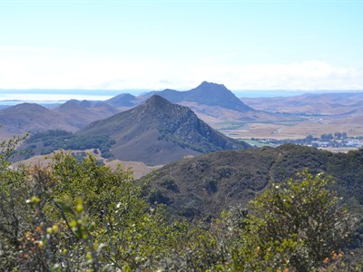
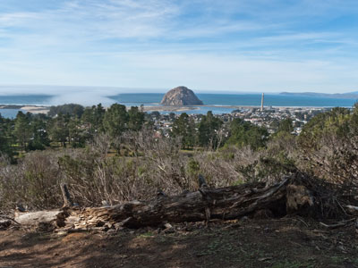
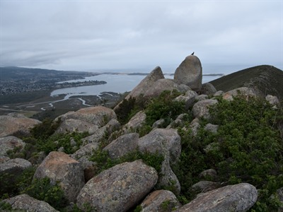
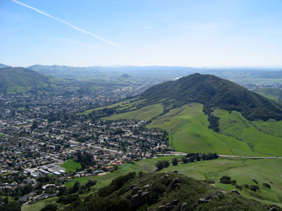
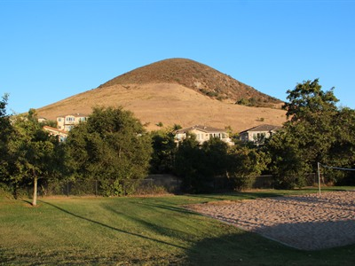
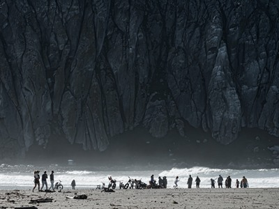
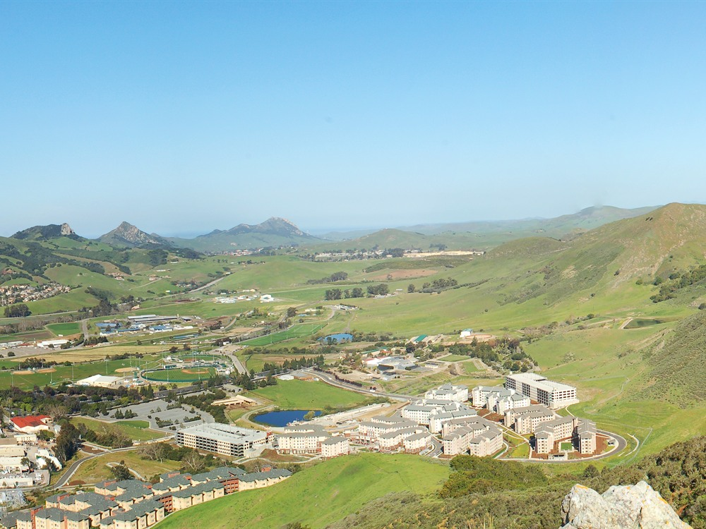
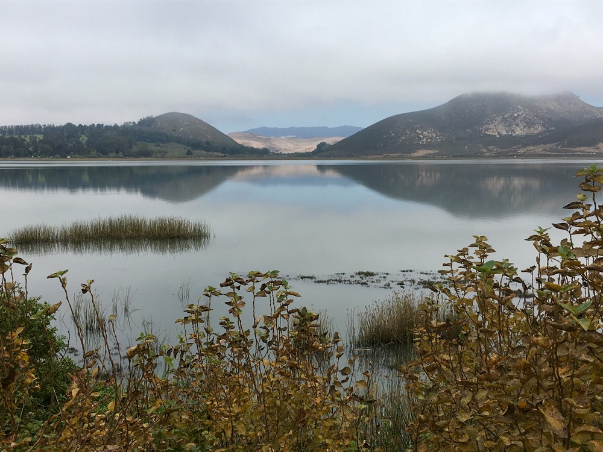
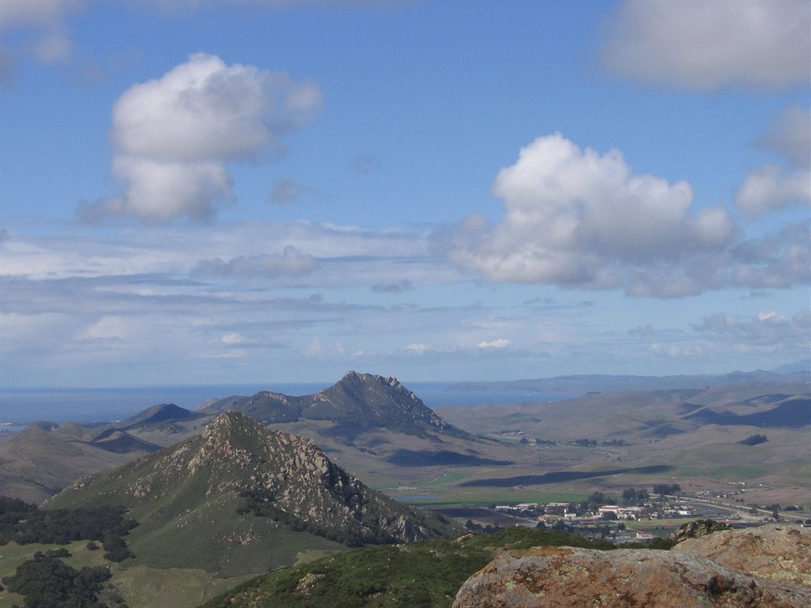
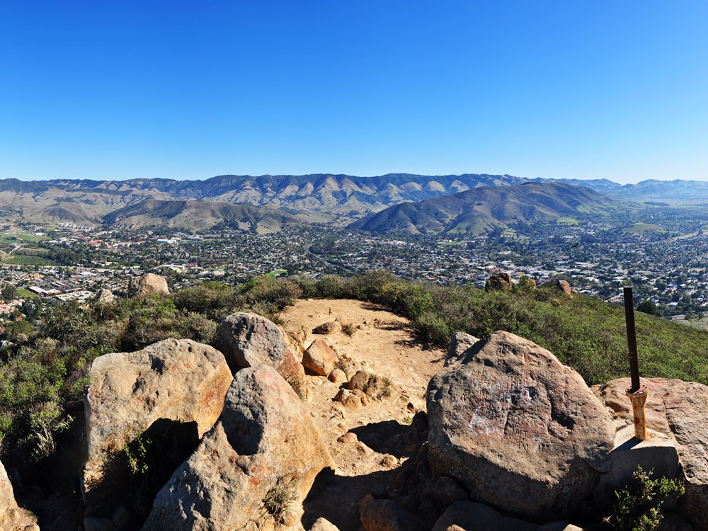

Chain of ancient volcanic peaks forming a dramatic ridgeline across the coastal landscape with distinct summits rising sharply above surrounding valleys.
General Information
Accessible viewpoints and trails follow local park or land access hours
Parking or trail access fees may apply depending on specific locations
How to Get There
From San Luis Obispo (local access): Drive west on Los Osos Valley Road or take CA‑1 north toward Morro Bay to view multiple peaks along the route, with trailheads and viewpoints accessible from side roads and state park entrances along the corridor.
Overview
The Nine Sisters, also known as the Morros, are a dramatic chain of ancient volcanic peaks that stretch roughly 16 to 17 miles along California’s Central Coast between Morro Bay and San Luis Obispo. Formed more than 20 million years ago during the Miocene epoch, these rugged landforms are volcanic plugs—solidified magma that once filled underground vents. Over millions of years, the surrounding softer rock eroded away, leaving behind the steep, isolated peaks that now define the region’s landscape.
From coast to inland, the Nine Sisters form a near-linear sequence of distinct peaks, each with its own character and elevation:
- Morro Rock (576 ft)
- Black Hill (665 ft)
- Cerro Cabrillo (911 ft)
- Hollister Peak (1,404 ft)
- Cerro Romauldo (1,306 ft)
- Chumash Peak (1,257 ft)
- Bishop Peak (1,559 ft)
- Cerro San Luis (1,292 ft)
- Islay Hill (775 ft)
While often referred to as “nine,” the volcanic field actually includes more than twenty similar formations, though these nine are the most prominent and visually iconic. Together, they run in a northwest-to-southeast line, rising abruptly from surrounding valleys and creating one of the most recognizable geological features on the Central Coast.
Today, the peaks serve as both natural landmarks and recreational destinations. Some, such as Bishop Peak, Cerro San Luis, and Black Hill, are open to hikers and offer sweeping views of the coastline, valleys, and neighboring summits. Others remain protected or privately owned, preserving their ecological and geological integrity. Whether viewed from a distance or explored up close, the Nine Sisters stand as enduring remnants of California’s ancient volcanic past.
Why they’re unique (geology + landscape)
-
Straight-line volcanic chain
- Most of the peaks lie in a near-straight line across the landscape
- This unusual alignment suggests deep geological forces shaping the region beneath the surface
-
Part of a rare volcanic system
- Formed by magma rising during tectonic activity along California’s shifting plates
- Associated with ancient subduction processes and the early development of the San Andreas Fault system
-
Distinctive rock type
- Composed mainly of dacite, a dense volcanic rock
- This hardness allowed the peaks to remain steep and rugged while surrounding terrain eroded away over millions of years
How they shape the region
The Nine Sisters define the entire San Luis Obispo landscape:
- Separate the Los Osos and Chorro valleys
- Provide iconic views seen from highways, beaches, and nearby towns
- Act as navigation landmarks, especially Morro Rock for sailors
Without these formations, the region would appear much flatter and less visually dramatic.
Which ones can you hike?
Not all are accessible, but several peaks are popular hiking destinations:
Hikeable peaks:
- Black Hill (easy, located in Morro Bay State Park)
- Cerro Cabrillo (more rugged terrain)
- Bishop Peak (most popular and highest)
- Cerro San Luis (Mt. Madonna)
- Islay Hill
Restricted or limited access:
- Morro Rock (protected bird sanctuary — no climbing allowed)
- Hollister Peak (private land)
- Chumash Peak and Cerro Romauldo (restricted or protected areas)
Best ways to experience them
Scenic drives:
- Highway 1 (Morro Bay to San Luis Obispo) — best mix of coastal and inland views
- Los Osos Valley Road — excellent perspective of the chain’s alignment
Viewpoints:
- Morro Bay waterfront — best views of Morro Rock
- Black Hill summit — panoramic view of the chain
- Bishop Peak — expansive inland and coastal vistas
This article uses material from the Wikipedia articles and official tourism pages for the Nine Sisters, which are released under the Creative Commons Attribution-Share-Alike License 3.0.
Featured Location

Mike Baird from Morro Bay, USA, CC BY 2.0, via Wikimedia Commons; Image Size Adjusted
.jpg){kind=link}
Bishop Peak
A rugged volcanic peak featuring steep hiking trails, panoramic views, and diverse native vegetation.

Mike Baird from Morro Bay, USA, CC BY 2.0, via Wikimedia Commons; Image Size Adjusted

Mike Baird from Morro Bay, USA, CC BY 2.0, via Wikimedia Commons; Image Size Adjusted
Cerro Cabrillo
Steep volcanic peak featuring rugged rock formations and panoramic views of coastal estuaries, rolling hills, and the Pacific shoreline.

Mike Baird from Morro Bay, USA, CC BY 2.0, via Wikimedia Commons; Image Size Adjusted
Cerro San Luis Obispo
1,292 feet mountain in San Luis Obispo, is part of the chain of peaks called the Nine Sisters, and is a common spot for hiking, jogging and mountain biking

Mike Baird from Morro Bay, USA, CC BY 2.0, via Wikimedia Commons; Image Size Adjusted
Islay Hill
Volcanic peak trail offering panoramic views of Morro Bay, the Pacific coastline, surrounding volcanic hills, and California's scenic Central Coast landscape.
Mike Baird from Morro Bay, USA, CC BY 2.0, via Wikimedia Commons; Image Size Adjusted
Islay Hill
Volcanic peak trail offering panoramic views of Morro Bay, the Pacific coastline, surrounding volcanic hills, and California's scenic Central Coast landscape.

Mike Baird from Morro Bay, USA, CC BY 2.0, via Wikimedia Commons; Image Size Adjusted
Morro Rock
Scenic coastal beach beneath Morro Rock offering sandy shoreline, calm bay waters, and sweeping views of one of California’s most iconic landmarks.






